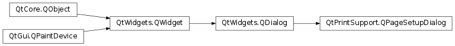

QPageSetupDialog¶
Detailed Description¶
The
PySide2.QtPrintSupport.QPageSetupDialogclass provides a configuration dialog for the page-related options on a printer.On Windows and macOS the page setup dialog is implemented using the native page setup dialogs.
Note that on Windows and macOS custom paper sizes won’t be reflected in the native page setup dialogs. Additionally, custom page margins set on a
PySide2.QtPrintSupport.QPrinterwon’t show in the native macOS page setup dialog.
-
class
PySide2.QtPrintSupport.QPageSetupDialog(printer[, parent=nullptr])¶ -
class
PySide2.QtPrintSupport.QPageSetupDialog([parent=nullptr]) Parameters: - printer –
PySide2.QtPrintSupport.QPrinter - parent –
PySide2.QtWidgets.QWidget
Constructs a page setup dialog that configures
printerwithparentas the parent widget.Constructs a page setup dialog that configures a default-constructed
PySide2.QtPrintSupport.QPrinterwithparentas the parent widget.- printer –
-
PySide2.QtPrintSupport.QPageSetupDialog.open(receiver, member)¶ Parameters: - receiver –
PySide2.QtCore.QObject - member – str
This is an overloaded function.
Opens the dialog and connects its
PySide2.QtWidgets.QDialog.accepted()signal to the slot specified byreceiverandmember.The signal will be disconnected from the slot when the dialog is closed.
- receiver –
-
PySide2.QtPrintSupport.QPageSetupDialog.printer()¶ Return type: PySide2.QtPrintSupport.QPrinterReturns the printer that was passed to the
PySide2.QtPrintSupport.QPageSetupDialogconstructor.
© 2018 The Qt Company Ltd. Documentation contributions included herein are the copyrights of their respective owners. The documentation provided herein is licensed under the terms of the GNU Free Documentation License version 1.3 as published by the Free Software Foundation. Qt and respective logos are trademarks of The Qt Company Ltd. in Finland and/or other countries worldwide. All other trademarks are property of their respective owners.